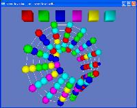

| | Freed InvasionFreed Invasion is a simple and fun puzzle game which quickly leads to interesting strategy. Based on the classic 'Color Invasion' game which is played on a normal 2D board, Freed Invasion as been 'freed' of it's 2 dimentional confinement so that you can play it on numerous 3d boards, or on normal flat boards with different shapes and patterns. The object of the game is to occupy more cells than your opponent. Two players alternate turns where you may change the color of all your occupied cells to some other colour, which makes any neighboring cells of the same colour become yours as well (a fairly decent AI is included for single player mode). It's really very simple once you try it out. Freed Invasion is part of The Freed Series of games 'freed' from their two dimensional confinement. 
Mobius Strip
| 
Sphere
| 
Two interconnected planes with
3 neighbors on each plane
| 
A cube of cells
Each has 6 neighbors
| |
More Screen Shots...
AboutFreed Invasion was written by me (Lewey Geselowitz) and turned out to be a pretty fun little puzzle game. Originally I was working on Freed Go and while doing so I figured it would be pretty easy to modify that program to become a Color Invasion type app, and it seems to have worked. It is also a part of The Freed Series which is a collection of standard 2D games expanded into the 3rd dimension and beyond. As far as the technology goes, it is based on my Lewcid interaction system. If you have ideas for new board types, adjusts to these ones, or just want to leave a comment I'm always more than happy to hear from people who have tried out my software. Feel free to drop me a line at lewey@lewcid.com |
DownloadFreed Invasion is available for both Windows and Mac OS X. Download the .zip file, unzip and run. For Windows make sure that the included glut32.dll file is in the same directory as FreedGo.exe OR you have installed GLUT on your system. For Mac OS X make sure that GLUT is already installed. Also the Mac version is Carbon based so while I havn't tested it, it may run earlier Mac OSes. If you appreciate this application, a small donation to support me writing more interesting apps like it (and not get a job writing accounting software) would be greatly appreciated.
FreedInvasionMac.zip
Platform: Mac OS X
Usage: Download, unzip and run
Note: I'm new to Carbon programming,
so the controls are not displayed.
Use this site as a reference.
|
|
ControlsThe controls are a little 'rustic' but they do the job and are very simple to understand and get going with. The first thing to know is that holding down the right mouse button and dragging will change your view. To change your colour, click on any object of that colour on the screen (the boxes at the top or any node on the board). You can change the board you are playing on by typing the key which corresponds to that board. See the different board-keys below. Listed here are the instructions on how to use Freed Invasion. When you run the game you will see them in a small window behind the main game window. Each turn, click on a coloured box to change into that colour.
The current players pieces will pulsate to indicate it is their turn.
Drag the right mouse button to change your view
Press 'N' for a new game.
Press '2' to turn 2 player mode on and off (off by default)
Press 'U' to Undo the previous move.
Board Types
Press the associated key to change to that board.
F - Flat standard game board
S - Sphereical board
C - Cylinder board
B - Box or cubed board
3 - 3 neighbors board
5 - 5 neighbors board
6 - 6 neighbors board
L - Layered planes
T - Torus board
M - Mobius strip board |
ScreenshotsSome 'eye-candy' for you. Please also keep in mind that it is alot harder to understand a shape and board state from just a single image, you really need to play it in 3D to understand it. |
|


{kind=link}
{kind=link}